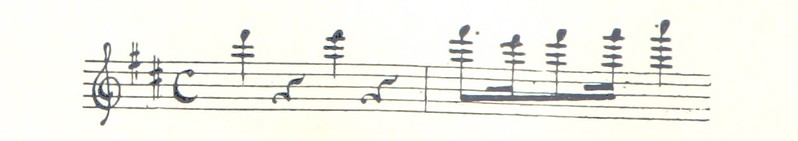

2. Every time he cuts off the straw, the pitch gets...
a. lower
b. higher
3. The pitch of the sound is lower when the straw is...
a. longer.
b. shorter.
Activity 4

Do you ever wonder how music is made? When you clap your hands, play a guitar, or even when a bird sings, it creates sound. Sound travels through the air and into our ears. But what are the characteristics of sound?
Pitch: Sound can be high or low. Imagine a bird's tweet, it's high, like a tiny bell. Now, think of a drum's beat, it's low, like a big drum.
Duration: Sound can be short or long. Clapping your hands makes a quick sound, while singing a song takes a longer time.
And how can we write down these sounds? Well, musicians use something called musical notation. It is a secret code for making music with different symbols:
Musicians use little shapes called notes to represent different sounds. Some notes are high, and some are low, just like the pitch we talked about.
Musicians also use symbols like "dots" and "lines" to show how long a sound should last (the rhythm). It's like writing down how fast or slow we should clap our hands or tap our feet.
So, the next time you hear your favorite song or see a musician playing an instrument, you'll know a little bit more about the magical world of sound and music. Keep exploring, and maybe one day, you'll create beautiful music of your own!
Answer the following questions:
1. Name the two characteristic of sound mentioned in the text.
2. Can you give an example of high pitch and low pitch sounds?
3. Can you give an example of a short sound?
4. How do musicians use notes to represent different sounds in music?
5. What do symbols like "dots" and "lines" in musical notation indicate. How are they related to sound duration?